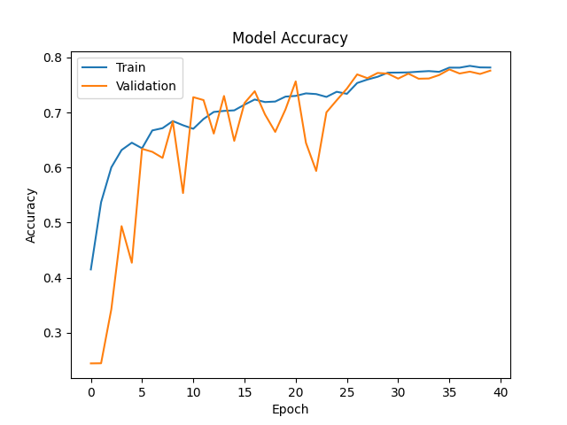
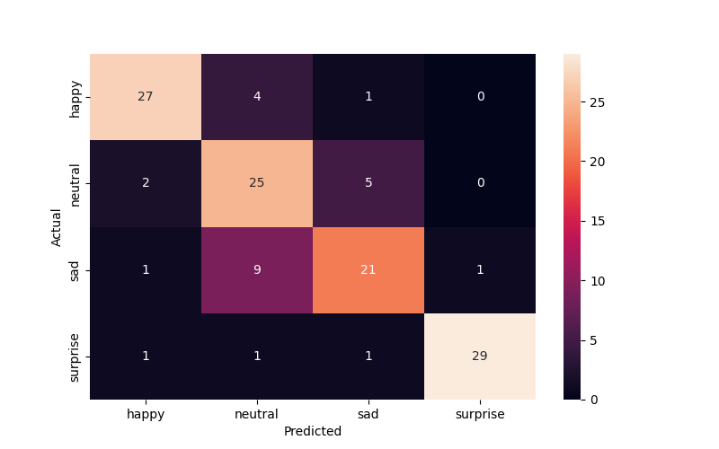

        <html>
        <head><title>Model Summary - 2024-04-10 14:56:10</title></head>
        <body>
        <h1>Model Configuration</h1>
        <pre>model:
  compile:
    learning_rate: 0.001
    optimizer: Adam
    optimizer_name: adam
  data:
    color_layers: 1
    color_mode: grayscale
    img_height: 48
    img_width: 48
    use_data_loaders: true
  layers:
  - filters: 64
    kernel_size:
    - 2
    - 2
    padding: same
    type: Conv2D
  - type: BatchNormalization
  - alpha: 0.1
    type: LeakyReLU
  - pool_size:
    - 2
    - 2
    type: MaxPooling2D
  - filters: 128
    kernel_size:
    - 2
    - 2
    padding: same
    type: Conv2D
  - type: BatchNormalization
  - alpha: 0.1
    type: LeakyReLU
  - pool_size:
    - 2
    - 2
    type: MaxPooling2D
  - filters: 256
    kernel_size:
    - 2
    - 2
    padding: same
    type: Conv2D
  - type: BatchNormalization
  - alpha: 0.1
    type: LeakyReLU
  - pool_size:
    - 2
    - 2
    type: MaxPooling2D
  - filters: 512
    kernel_size:
    - 2
    - 2
    padding: same
    type: Conv2D
  - type: BatchNormalization
  - alpha: 0.1
    type: LeakyReLU
  - pool_size:
    - 2
    - 2
    type: MaxPooling2D
  - filters: 128
    kernel_size:
    - 2
    - 2
    padding: same
    type: Conv2D
  - type: BatchNormalization
  - alpha: 0.1
    type: LeakyReLU
  - pool_size:
    - 2
    - 2
    type: MaxPooling2D
  - type: Flatten
  - activation: relu
    type: Dense
    units: 512
  - activation: relu
    type: Dense
    units: 128
  - type: Dense
    units: 64
  - type: BatchNormalization
  - type: ReLU
  - activation: softmax
    type: Dense
    units: 4
  train:
    batch_size: 128
    epochs: 40
    patience: 7
</pre>
        <h1>Model Summary</h1>
        <pre>Model: "sequential"
┏━━━━━━━━━━━━━━━━━━━━━━━━━━━━━━━━━━━━━━┳━━━━━━━━━━━━━━━━━━━━━━━━━━━━━┳━━━━━━━━━━━━━━━━━┓
┃ Layer (type)                         ┃ Output Shape                ┃         Param # ┃
┡━━━━━━━━━━━━━━━━━━━━━━━━━━━━━━━━━━━━━━╇━━━━━━━━━━━━━━━━━━━━━━━━━━━━━╇━━━━━━━━━━━━━━━━━┩
│ conv2d (Conv2D)                      │ (None, 48, 48, 64)          │             320 │
├──────────────────────────────────────┼─────────────────────────────┼─────────────────┤
│ batch_normalization                  │ (None, 48, 48, 64)          │             256 │
│ (BatchNormalization)                 │                             │                 │
├──────────────────────────────────────┼─────────────────────────────┼─────────────────┤
│ leaky_re_lu (LeakyReLU)              │ (None, 48, 48, 64)          │               0 │
├──────────────────────────────────────┼─────────────────────────────┼─────────────────┤
│ max_pooling2d (MaxPooling2D)         │ (None, 24, 24, 64)          │               0 │
├──────────────────────────────────────┼─────────────────────────────┼─────────────────┤
│ conv2d_1 (Conv2D)                    │ (None, 24, 24, 128)         │          32,896 │
├──────────────────────────────────────┼─────────────────────────────┼─────────────────┤
│ batch_normalization_1                │ (None, 24, 24, 128)         │             512 │
│ (BatchNormalization)                 │                             │                 │
├──────────────────────────────────────┼─────────────────────────────┼─────────────────┤
│ leaky_re_lu_1 (LeakyReLU)            │ (None, 24, 24, 128)         │               0 │
├──────────────────────────────────────┼─────────────────────────────┼─────────────────┤
│ max_pooling2d_1 (MaxPooling2D)       │ (None, 12, 12, 128)         │               0 │
├──────────────────────────────────────┼─────────────────────────────┼─────────────────┤
│ conv2d_2 (Conv2D)                    │ (None, 12, 12, 256)         │         131,328 │
├──────────────────────────────────────┼─────────────────────────────┼─────────────────┤
│ batch_normalization_2                │ (None, 12, 12, 256)         │           1,024 │
│ (BatchNormalization)                 │                             │                 │
├──────────────────────────────────────┼─────────────────────────────┼─────────────────┤
│ leaky_re_lu_2 (LeakyReLU)            │ (None, 12, 12, 256)         │               0 │
├──────────────────────────────────────┼─────────────────────────────┼─────────────────┤
│ max_pooling2d_2 (MaxPooling2D)       │ (None, 6, 6, 256)           │               0 │
├──────────────────────────────────────┼─────────────────────────────┼─────────────────┤
│ conv2d_3 (Conv2D)                    │ (None, 6, 6, 512)           │         524,800 │
├──────────────────────────────────────┼─────────────────────────────┼─────────────────┤
│ batch_normalization_3                │ (None, 6, 6, 512)           │           2,048 │
│ (BatchNormalization)                 │                             │                 │
├──────────────────────────────────────┼─────────────────────────────┼─────────────────┤
│ leaky_re_lu_3 (LeakyReLU)            │ (None, 6, 6, 512)           │               0 │
├──────────────────────────────────────┼─────────────────────────────┼─────────────────┤
│ max_pooling2d_3 (MaxPooling2D)       │ (None, 3, 3, 512)           │               0 │
├──────────────────────────────────────┼─────────────────────────────┼─────────────────┤
│ conv2d_4 (Conv2D)                    │ (None, 3, 3, 128)           │         262,272 │
├──────────────────────────────────────┼─────────────────────────────┼─────────────────┤
│ batch_normalization_4                │ (None, 3, 3, 128)           │             512 │
│ (BatchNormalization)                 │                             │                 │
├──────────────────────────────────────┼─────────────────────────────┼─────────────────┤
│ leaky_re_lu_4 (LeakyReLU)            │ (None, 3, 3, 128)           │               0 │
├──────────────────────────────────────┼─────────────────────────────┼─────────────────┤
│ max_pooling2d_4 (MaxPooling2D)       │ (None, 1, 1, 128)           │               0 │
├──────────────────────────────────────┼─────────────────────────────┼─────────────────┤
│ flatten (Flatten)                    │ (None, 128)                 │               0 │
├──────────────────────────────────────┼─────────────────────────────┼─────────────────┤
│ dense (Dense)                        │ (None, 512)                 │          66,048 │
├──────────────────────────────────────┼─────────────────────────────┼─────────────────┤
│ dense_1 (Dense)                      │ (None, 128)                 │          65,664 │
├──────────────────────────────────────┼─────────────────────────────┼─────────────────┤
│ dense_2 (Dense)                      │ (None, 64)                  │           8,256 │
├──────────────────────────────────────┼─────────────────────────────┼─────────────────┤
│ batch_normalization_5                │ (None, 64)                  │             256 │
│ (BatchNormalization)                 │                             │                 │
├──────────────────────────────────────┼─────────────────────────────┼─────────────────┤
│ re_lu (ReLU)                         │ (None, 64)                  │               0 │
├──────────────────────────────────────┼─────────────────────────────┼─────────────────┤
│ dense_3 (Dense)                      │ (None, 4)                   │             260 │
└──────────────────────────────────────┴─────────────────────────────┴─────────────────┘
 Total params: 1,096,452 (4.18 MB)
 Trainable params: 1,094,148 (4.17 MB)
 Non-trainable params: 2,304 (9.00 KB)
</pre>
        <h2>Test Accuracy</h2>
        <p>
1/1 ━━━━━━━━━━━━━━━━━━━━ 0s 26ms/step - accuracy: 0.7969 - loss: 0.5217
1/1 ━━━━━━━━━━━━━━━━━━━━ 0s 27ms/step - accuracy: 0.7969 - loss: 0.5217

1/1 ━━━━━━━━━━━━━━━━━━━━ 0s 324ms/step
1/1 ━━━━━━━━━━━━━━━━━━━━ 0s 324ms/step
</p>
        <h2>Accuracy Plot</h2>
        
        <h2>Classification Report</h2>
        <pre>              precision    recall  f1-score   support

       happy       0.87      0.84      0.86        32
     neutral       0.64      0.78      0.70        32
         sad       0.75      0.66      0.70        32
    surprise       0.97      0.91      0.94        32

    accuracy                           0.80       128
   macro avg       0.81      0.80      0.80       128
weighted avg       0.81      0.80      0.80       128

</pre>
        <h2>History</h2>
        <pre>Epoch 1: accuracy: 0.4150, loss: 1.2494, val_accuracy: 0.2443, val_loss: 1.5256, learning_rate: 0.0010
Epoch 2: accuracy: 0.5371, loss: 1.0506, val_accuracy: 0.2445, val_loss: 1.5157, learning_rate: 0.0010
Epoch 3: accuracy: 0.6004, loss: 0.9300, val_accuracy: 0.3428, val_loss: 1.4634, learning_rate: 0.0010
Epoch 4: accuracy: 0.6319, loss: 0.8876, val_accuracy: 0.4937, val_loss: 1.4948, learning_rate: 0.0010
Epoch 5: accuracy: 0.6452, loss: 0.8511, val_accuracy: 0.4272, val_loss: 1.2607, learning_rate: 0.0010
Epoch 6: accuracy: 0.6351, loss: 0.8653, val_accuracy: 0.6341, val_loss: 0.9795, learning_rate: 0.0010
Epoch 7: accuracy: 0.6675, loss: 0.8040, val_accuracy: 0.6287, val_loss: 0.8624, learning_rate: 0.0010
Epoch 8: accuracy: 0.6717, loss: 0.7951, val_accuracy: 0.6176, val_loss: 0.9386, learning_rate: 0.0010
Epoch 9: accuracy: 0.6846, loss: 0.7616, val_accuracy: 0.6839, val_loss: 0.7909, learning_rate: 0.0010
Epoch 10: accuracy: 0.6769, loss: 0.7857, val_accuracy: 0.5537, val_loss: 1.1004, learning_rate: 0.0010
Epoch 11: accuracy: 0.6705, loss: 0.7795, val_accuracy: 0.7279, val_loss: 0.6659, learning_rate: 0.0010
Epoch 12: accuracy: 0.6883, loss: 0.7534, val_accuracy: 0.7227, val_loss: 0.6689, learning_rate: 0.0010
Epoch 13: accuracy: 0.7011, loss: 0.7239, val_accuracy: 0.6618, val_loss: 0.8469, learning_rate: 0.0010
Epoch 14: accuracy: 0.7030, loss: 0.7163, val_accuracy: 0.7302, val_loss: 0.6593, learning_rate: 0.0010
Epoch 15: accuracy: 0.7040, loss: 0.7171, val_accuracy: 0.6486, val_loss: 0.8215, learning_rate: 0.0010
Epoch 16: accuracy: 0.7143, loss: 0.6944, val_accuracy: 0.7173, val_loss: 0.7019, learning_rate: 0.0010
Epoch 17: accuracy: 0.7237, loss: 0.6825, val_accuracy: 0.7388, val_loss: 0.6511, learning_rate: 0.0010
Epoch 18: accuracy: 0.7191, loss: 0.6781, val_accuracy: 0.6966, val_loss: 0.7656, learning_rate: 0.0010
Epoch 19: accuracy: 0.7200, loss: 0.6810, val_accuracy: 0.6649, val_loss: 0.8571, learning_rate: 0.0010
Epoch 20: accuracy: 0.7290, loss: 0.6555, val_accuracy: 0.7056, val_loss: 0.7220, learning_rate: 0.0010
Epoch 21: accuracy: 0.7303, loss: 0.6580, val_accuracy: 0.7567, val_loss: 0.6098, learning_rate: 0.0010
Epoch 22: accuracy: 0.7349, loss: 0.6488, val_accuracy: 0.6450, val_loss: 0.8328, learning_rate: 0.0010
Epoch 23: accuracy: 0.7336, loss: 0.6468, val_accuracy: 0.5939, val_loss: 1.0548, learning_rate: 0.0010
Epoch 24: accuracy: 0.7284, loss: 0.6567, val_accuracy: 0.7004, val_loss: 0.7549, learning_rate: 0.0010
Epoch 25: accuracy: 0.7378, loss: 0.6363, val_accuracy: 0.7223, val_loss: 0.6638, learning_rate: 0.0010
Epoch 26: accuracy: 0.7341, loss: 0.6600, val_accuracy: 0.7436, val_loss: 0.6386, learning_rate: 0.0010
Epoch 27: accuracy: 0.7537, loss: 0.6087, val_accuracy: 0.7693, val_loss: 0.5799, learning_rate: 0.0002
Epoch 28: accuracy: 0.7600, loss: 0.5898, val_accuracy: 0.7625, val_loss: 0.6062, learning_rate: 0.0002
Epoch 29: accuracy: 0.7650, loss: 0.5829, val_accuracy: 0.7720, val_loss: 0.5730, learning_rate: 0.0002
Epoch 30: accuracy: 0.7725, loss: 0.5709, val_accuracy: 0.7707, val_loss: 0.5727, learning_rate: 0.0002
Epoch 31: accuracy: 0.7727, loss: 0.5679, val_accuracy: 0.7617, val_loss: 0.5942, learning_rate: 0.0002
Epoch 32: accuracy: 0.7730, loss: 0.5644, val_accuracy: 0.7707, val_loss: 0.5761, learning_rate: 0.0002
Epoch 33: accuracy: 0.7743, loss: 0.5694, val_accuracy: 0.7615, val_loss: 0.5951, learning_rate: 0.0002
Epoch 34: accuracy: 0.7754, loss: 0.5624, val_accuracy: 0.7619, val_loss: 0.6121, learning_rate: 0.0002
Epoch 35: accuracy: 0.7740, loss: 0.5598, val_accuracy: 0.7681, val_loss: 0.5919, learning_rate: 0.0002
Epoch 36: accuracy: 0.7817, loss: 0.5497, val_accuracy: 0.7784, val_loss: 0.5625, learning_rate: 0.0000
Epoch 37: accuracy: 0.7816, loss: 0.5464, val_accuracy: 0.7709, val_loss: 0.5771, learning_rate: 0.0000
Epoch 38: accuracy: 0.7848, loss: 0.5347, val_accuracy: 0.7744, val_loss: 0.5741, learning_rate: 0.0000
Epoch 39: accuracy: 0.7821, loss: 0.5339, val_accuracy: 0.7701, val_loss: 0.5844, learning_rate: 0.0000
Epoch 40: accuracy: 0.7819, loss: 0.5415, val_accuracy: 0.7762, val_loss: 0.5708, learning_rate: 0.0000
</pre>
        <h2>Confusion Matrix</h2>
        
        <h2>Predicted Images</h2>
        
        </body>
        </html>
        